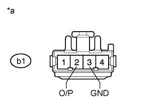

DTC B2650 Slide Sensor Malfunction |
| DTC Code | DTC Detection Condition | Trouble Area |
| B2650 | The forward and backward lock detection position of the sensor is the same. |
|
| 1.PERFORM ACTIVE TEST USING INTELLIGENT TESTER (POWER SEAT MOTOR FUNCTION) |
Select the Active Test, use the intelligent tester to generate a control command, and then check the power seat motor function (Click here).
| Tester Display | Test Part | Control Range | Diagnostic Note |
| Seat Slide Operation | Seat sliding operation | Front / OFF / Rear | - |
|
| ||||
| OK | |
| 2.CHECK FRONT POWER SEAT SWITCH LH (SLIDE MOTOR CIRCUIT) |
|  |
Disconnect the b1 motor connector.
Measure the voltage according to the value(s) in the table below.
| Tester Connection | Switch Condition | Specified Condition |
| b1-2 (O/P) - b1-3 (GND) | Sliding switch on | 4.8 to 5.1 V |
| *a | Front view of wire harness connector (to Separate Type Front Seat Cushion Spring Assembly LH [Slide Motor]) |
|
| ||||
| OK | |
| 3.CHECK SEPARATE TYPE FRONT SEAT CUSHION SPRING ASSEMBLY LH (SLIDE MOTOR) |
Connect the b1 motor connector.
Measure the voltage according to the value(s) in the table below.
| Tester Connection | Switch Condition | Specified Condition |
| b1-2 (O/P) - Body ground | Sliding switch on | 4.5 to 4.8 V |
| *a | Component with harness connected (Separate Type Front Seat Cushion Spring Assembly LH [Slide Motor]) |
|
| ||||
| OK | ||
| ||
| 4.CHECK HARNESS AND CONNECTOR (FRONT POWER SEAT SWITCH - SLIDE MOTOR) |
Disconnect the b5 switch connector.
Disconnect the b1 motor connector.
Measure the resistance according to the value(s) in the table below.
| Tester Connection | Condition | Specified Condition |
| b5-5 (SSRS) - b1-2 (O/P) | Always | Below 1 Ω |
| b5-1 (SGND) - b1-3 (GND) | Always | Below 1 Ω |
| b5-5 (SSRS) - Body ground | Always | 10 kΩ or higher |
| b5-1 (SGND) - Body ground | Always | 10 kΩ or higher |
|
| ||||
| OK | ||
| ||
| 5.INSPECT SEPARATE TYPE FRONT SEAT CUSHION SPRING ASSEMBLY LH (SLIDE MOTOR) |
Remove the separate type front seat cushion spring assembly LH (slide motor) (Click here).
Check if the seat cushion spring moves smoothly when the battery is connected to the slide motor connector terminals.
| Measurement Condition | Specified Condition |
| Battery positive (+) → 4 (FWD) Battery negative (-) → 1 (BACK) | Seat cushion spring moves forward |
| Battery positive (+) → 1 (BACK) Battery negative (-) → 4 (FWD) | Seat cushion spring moves backward |
|
| ||||
| OK | |
| 6.CHECK HARNESS AND CONNECTOR (FRONT POWER SEAT SWITCH - SLIDE MOTOR) |
Disconnect the b4 switch connector.
Disconnect the b1 motor connector.
Measure the resistance according to the value(s) in the table below.
| Tester Connection | Condition | Specified Condition |
| b4-3 (SLD+) - b1-4 (FWD) | Always | Below 1 Ω |
| b4-4 (SLD-) - b1-1 (BACK) | Always | Below 1 Ω |
| b4-3 (SLD+) - Body ground | Always | 10 kΩ or higher |
| b4-4 (SLD-) - Body ground | Always | 10 kΩ or higher |
|
| ||||
| OK | ||
| ||